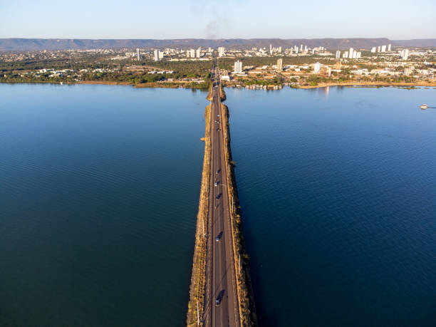

Tocantins é um estado localizado na região Norte do Brasil, criado em 1988, sendo um dos mais jovens do país. Sua capital é Palmas, uma cidade moderna e planejada. Tocantins é conhecido por suas paisagens naturais incríveis, incluindo rios, cachoeiras e áreas de cerrado, além de ser uma região de grande potencial agrícola, com destaque para a produção de soja, milho e algodão. A cultura local é bastante rica, com influências indígenas e sertanejas, refletidas na música, na culinária e nas festas tradicionais. Se quiser mais informações, estou aqui para ajudar!
